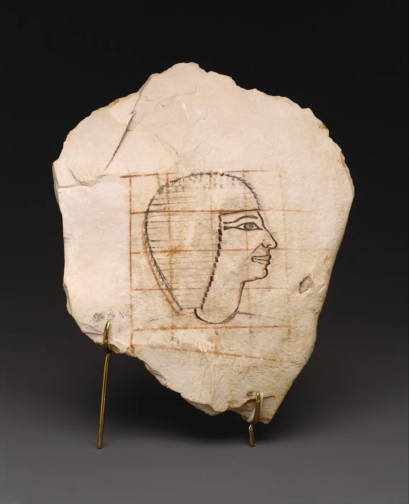
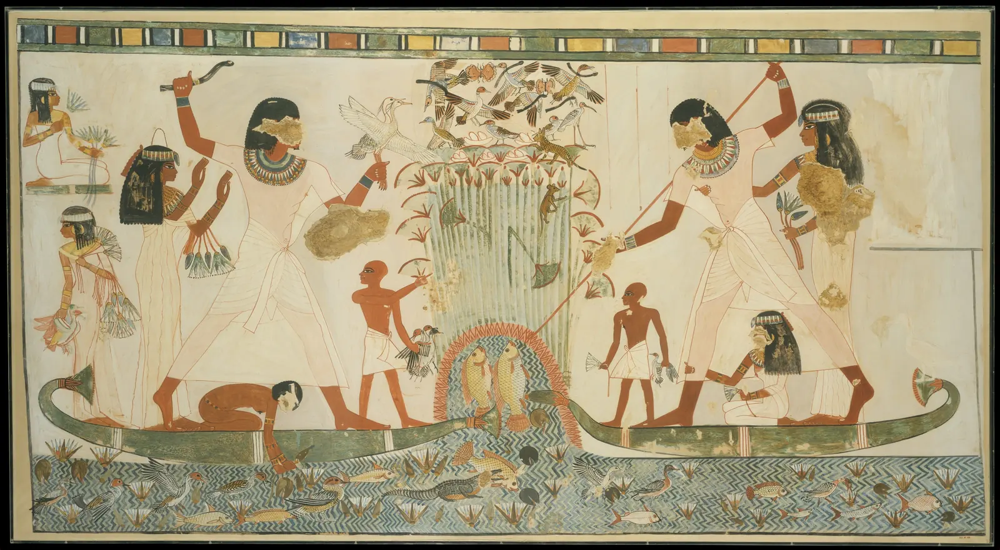
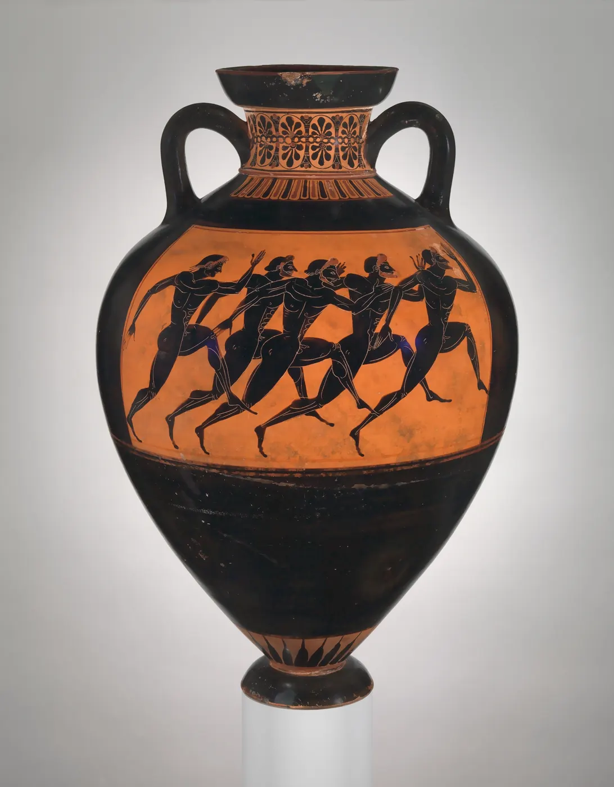
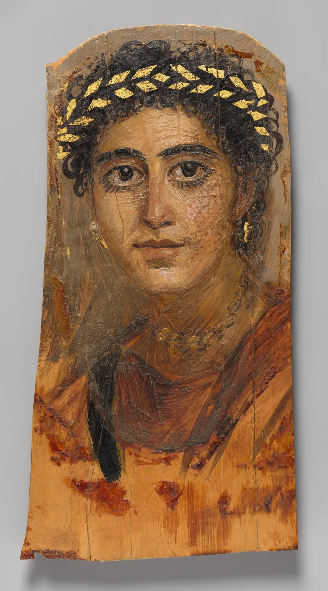
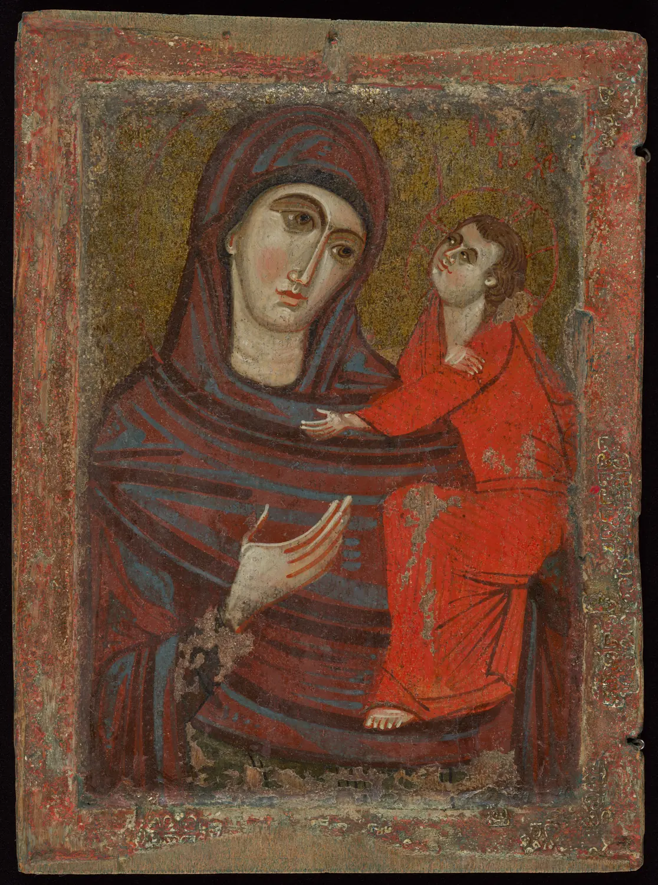
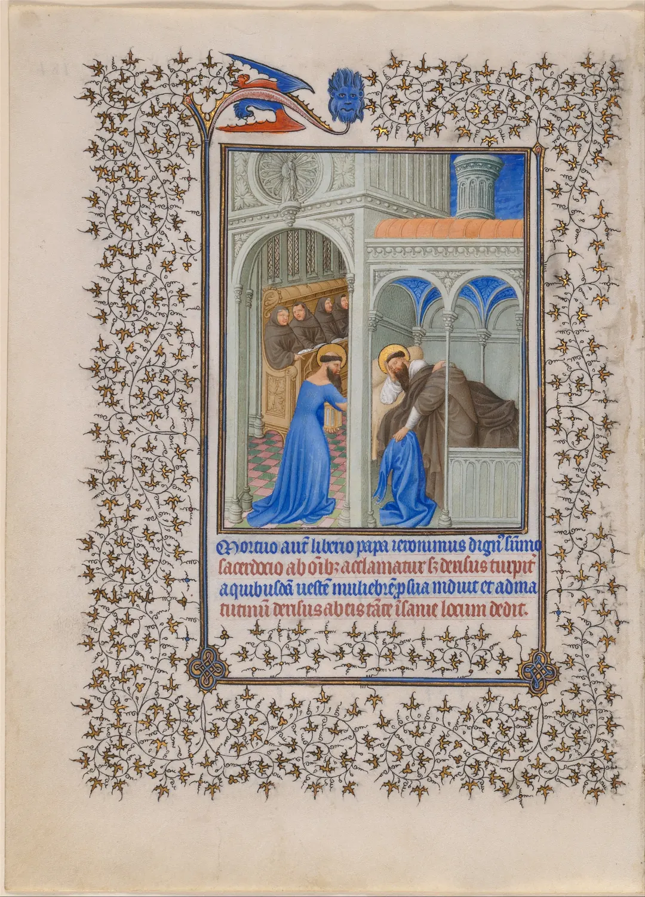
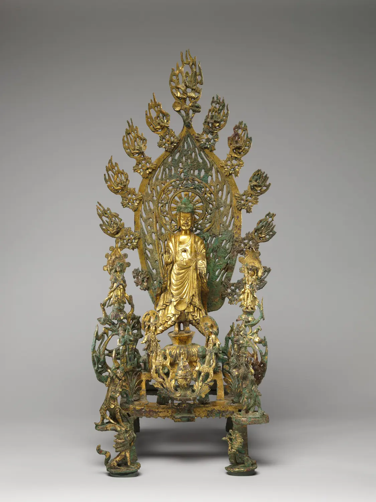

고대와 중세
3,500년쯤 전 이집트의 한 화가가 석회암 조각에 붉은 격자를 긋고 사람의 옆얼굴을 그렸다. 코와 입술과 턱은 옆에서 본 모양인데, 눈은 정면에서 본 아몬드 모양이다. 지금 보면 "틀린" 그림 같다. 그런데 이 화가는 서툴러서 그렇게 그린 것이 아니다. 같은 방식이 3,000년 가까이 거의 그대로 이어졌다. 이 장은 보이는 대로가 아니라 아는 대로, 믿는 대로 그린 그림들, 곧 이집트의 무덤 벽화에서 그리스의 조각과 도기, 로마 시대 이집트의 초상, 비잔틴의 성상, 중세의 필사본, 그리고 같은 시기 동아시아의 불상까지를 그 그림이 맡았던 일로 읽는다.
- 이집트 그림의 정면성과 조합된 시점이 "부위마다 가장 잘 알아볼 수 있는 모양"을 고른 결과임을 설명한다.
- 격자가 비례를 표준화하고 작은 밑그림을 큰 벽으로 옮기는 도구였음을 시뮬레이터로 확인한다.
- 위계적 크기가 거리 대신 중요도로 크기를 정하는 규칙이며, 이집트·중국·고구려에 두루 나타난다는 것을 본다.
- 쿠로스의 비례를 사진 위에서 직접 재고, 사진으로 잰 값과 실측값이 왜 다른지 안다.
- 금빛 바탕과 중세 필사본의 색이 촛불과 예배라는 쓰임에 맞춘 선택이었음을 읽는다.
3,000년을 한 장에
이 장이 다루는 시간은 이 책의 나머지 장을 모두 합친 것보다 길다. 그래서 먼저 지도를 그린다. 아래 그림의 가로축은 연도, 막대는 이 장에서 만날 그림들이 속한 시대다. 이름이 한 줄에 놓였다고 해서 서로 이어진 한 이야기는 아니다. 이집트의 규칙은 그리스에 영향을 주었고, 비잔틴의 성상은 로마 시대의 초상과 재료를 나누었지만, 북위의 불상은 전혀 다른 길에서 같은 문제, 곧 "가장 중요한 존재를 어떻게 보이게 할까"에 답했다.
옆얼굴에 정면 눈: 정면성
먼저 문제의 그림을 본다. 하트셉수트 여왕 시대의 고관 세넨무트의 얼굴을 그린 스케치다. 이런 석회암 조각이나 깨진 도기에 그린 그림과 글을 오스트라콘(Ostracon)이라고 부른다. 파피루스가 비쌌으므로 연습과 메모에는 이런 조각을 썼다.

이집트의 사람 그림에는 거의 늘 같은 조합이 나온다. 머리는 옆모습, 눈은 정면, 어깨와 가슴은 정면, 허리는 비스듬히, 다리와 발은 옆모습. 이런 방식을 흔히 정면성(Frontality) 또는 조합된 시점이라고 부른다. 독일의 이집트학자 하인리히 셰퍼는 『이집트 미술에 대하여』(1919)에서, 이집트 화가는 한 자리에서 본 모습이 아니라 사물에 대해 아는 것을 그렸다고 정리했다. 사람의 어깨는 넓고, 눈은 아몬드 모양이고, 발은 앞뒤로 길다. 각 부위를 그 특징이 가장 잘 드러나는 방향에서 그려 하나로 붙인 것이다.
정말 그런지 간단한 모형으로 확인해 본다. 아래 왼쪽 인물은 한 자리에서 본 모습이다. 슬라이더로 보는 각도를 바꾼다(0°는 정면, 90°는 옆). 오른쪽은 이집트식으로 부위마다 방향을 따로 고른 인물이다. 아래 막대는 이 책의 모형으로 계산한 "부위별로 알아볼 수 있는 정도"다.
한 시점과 조합된 시점
이 모형은 단순하지만 핵심을 보여 준다. 한 시점의 그림은 반드시 무언가를 잃는다. 이집트 화가는 그 손실을 받아들이지 않고, 부위마다 가장 "그 사람다운" 모양을 모았다. 무덤 속 그림은 죽은 이가 저세상에서도 온전한 몸으로 살아가기를 바라는 그림이었으므로, 어깨 한쪽이 가려지거나 발이 겹쳐 사라지는 것은 곤란한 일이었다는 해석이 널리 받아들여진다. 이 그림들은 보는 사람의 눈이 아니라 그려진 사람의 온전함을 위해 그렸다.
독일의 이집트학자 엠마 브루너트라우트는 이런 방식을 원근법(Perspektive)에 빗대어 아스펙티브(Aspektive)라고 불렀다. 한 점에서 본 모습을 모으는 원근법과 달리, 여러 측면을 하나씩 나란히 늘어놓는 방식이라는 뜻이다. 이 장 끝의 종합 시뮬레이터에서 이 방식으로 연못이 있는 정원을 그려 본다.
격자: 비례를 맞추고 크게 옮기기
세넨무트 스케치의 붉은 선은 장식이 아니다. 이집트 화가들은 벽이나 판에 먼저 같은 간격의 격자를 긋고, 몸의 각 부분이 몇 번째 줄에 오는지 정해진 대로 그렸다. 미국의 이집트학자 게이 로빈스는 『고대 이집트 미술의 비례와 양식』(1994)에서 이 규칙을 정리했다. 서 있는 사람은 발바닥에서 이마의 머리선까지 18칸, 무릎은 6번째 줄, 어깨는 16번째 줄 근처에 온다. 훨씬 뒤인 후기 왕조 시대(기원전 7세기 무렵)부터는 같은 높이를 21칸으로 나누는 다른 격자가 쓰였다.
격자의 쓸모는 둘이다. 하나는 표준화다. 여러 화가가 한 무덤을 나누어 그려도 사람들의 비례가 같다. 다른 하나는 옮기기다. 손바닥만 한 밑그림을 칸마다 대응시키면 벽 높이의 인물로 옮겨도 비례가 무너지지 않는다. 아래에서 왼쪽의 작은 밑그림을 오른쪽 벽으로 옮긴다. 격자 칸 수를 바꾸고, 벽 위 인물의 키를 손잡이로 끌어 바꿔 본다.
격자로 옮겨 그리기
칸 수를 바꿔 보면 18칸이라는 숫자가 신비한 비율이 아니라 실용적인 타협이라는 것이 보인다. 무릎·허리·팔꿈치·어깨 같은 몸의 주요 마디가 칸의 경계에 맞아떨어질 만큼 촘촘하고, 큰 벽에 그어도 감당할 만큼 성기다. 이런 격자 옮기기는 지금도 벽화나 큰 그림을 그릴 때 쓰는 방법이고(DrawingBook), 르네상스의 화가들도 밑그림을 옮기는 데 격자를 썼다.
위계적 크기: 중요한 사람이 크다
이번에는 큰 그림이다. 테베의 서기 메나의 무덤 벽화를 1924년에 화가 니나 드 개리스 데이비스가 실물 크기로 옮겨 그린 모사본이다. 원래 벽은 이집트에 있고, 이 모사본은 원래 벽에 남은 손상까지 그대로 옮긴 기록이다.

메나는 같은 배에 탄 하인 아이보다 훨씬 크다. 이 책이 사진 위에서 재면 왼쪽 메나의 키(가발 위부터 발바닥까지)는 약 528픽셀, 그 앞에 선 하인 아이는 약 270픽셀로, 비율이 약 1.96이다. 아이가 멀리 있어서 작은 것이 아니다. 둘은 같은 배 위, 같은 바닥선 위에 서 있다. 이렇게 거리 대신 중요도로 크기를 정하는 방식을 위계적 크기(Hierarchical scale)라고 부른다.
아래 장면에서 두 규칙을 비교한다. "거리" 쪽 끝에서는 멀리 있는 사람일수록 작고 화면 위쪽에 놓인다(DrawingBook의 원근). "위계" 쪽 끝에서는 모두 같은 바닥선에 서고, 크기는 신분이 정한다. 가운데 주인공을 위아래로 끌어 앞뒤로 옮겨 본다.
거리로 정한 크기, 중요도로 정한 크기
위계적 크기는 이집트만의 규칙이 아니다. 고구려의 안악 3호분(357년) 벽화에서 무덤 주인은 둘레의 시종보다 훨씬 크게 그려졌고, 무용총의 「수렵도」에서는 말 탄 사냥꾼보다 산이 작다. 중세 유럽의 제단화에서 성모는 무릎 꿇은 기증자보다 몇 배 크다. 북위의 불상도 같다(그림 5). 서로 영향을 주고받지 않은 지역들이 같은 방법에 이르렀다는 것은, 이것이 서툰 원근이 아니라 "누가 중요한가"를 한눈에 보여 주는 독립적이고 효과적인 해법이라는 뜻이다.
그리스: 서 있는 청년과 비례
기원전 7세기 말부터 그리스 사람들은 이집트와 교류하며 실물 크기의 돌 조각을 세우기 시작했다. 벌거벗은 청년이 왼발을 조금 내딛고 팔을 몸에 붙인 채 정면을 보고 서 있는 조각을 쿠로스(Kouros, 청년)라고 부른다. 자세는 이집트의 서 있는 조각과 닮았다. 메트로폴리탄 미술관의 쿠로스는 이런 조각 가운데 이른 시기의 것으로, 소장처는 키 194.6 cm, 머리 높이 30.5 cm로 기록한다.
아래에서 사진 위의 세 손잡이(정수리, 턱, 발바닥)를 끌어 직접 재 본다. 키를 머리 높이로 나눈 값을 흔히 "몇 등신"이라고 부른다.
쿠로스를 머리로 재기
그리스 사람들은 비례를 글로도 남기려 했다. 기원전 5세기의 조각가 폴리클레이토스는 『카논(규범)』이라는 글에서 손가락과 손가락, 손과 팔처럼 부분과 부분의 관계로 아름다운 몸을 정의했다고 전한다. 다만 그 글은 남아 있지 않고, 수백 년 뒤 의사 갈레노스 같은 후대 저자의 언급으로만 알려진다. "그리스 조각은 7등신" 같은 숫자는 후대의 측정과 재구성에서 나온 것이지 원문의 숫자가 아니다. 쿠로스의 비례가 이집트의 격자와 관련이 있다는 주장도 있다(예를 들어 Guralnick 1978의 측정 연구). 그러나 영향의 정도는 연구자마다 다르게 본다.


오른쪽 초상이 이 장에서 가장 중요한 "규칙이 깨지는 순간"이다. 1세기 말의 이집트에서, 이집트의 미라 풍습과 그리스·로마의 회화 기법이 만나 이렇게 "보이는 대로"에 가까운 얼굴이 그려졌다. 르네상스보다 1,300년 이상 앞선다. 고대 사람들이 보이는 대로 그리는 법을 몰랐던 것이 아니다. 무덤 벽에는 아는 대로, 미라의 얼굴에는 보이는 대로, 상품 항아리에는 전통대로. 그림이 맡은 일에 따라 다른 방식을 골랐다.
금빛 바탕: 이 세상 밖의 공간
로마 시대 초상의 납화 기법은 초기 그리스도교의 성상으로도 이어졌다. 시나이반도 성 카타리나 수도원에 남은 6세기 무렵의 이콘 몇 점은 같은 납화로 그려졌다. 그리스어로 "모상"을 뜻하는 이콘(Icon)은 예배에 쓰는 그리스도, 성모, 성인의 그림이다. 8~9세기의 비잔틴 제국에서는 성상을 숭배해도 되는가를 두고 오랜 논쟁(성상 파괴 논쟁, 726~843년)이 벌어졌고, 그 뒤로 이콘의 모습은 정해진 유형을 따르게 되었다. 아래 이콘은 성모가 손으로 아기 예수를 가리키는 유형으로, "길을 가리키는 이"라는 뜻의 호데게트리아(Hodegetria)라고 부른다.
이콘과 그 영향을 받은 이탈리아의 제단화에는 흔히 금박을 입힌 바탕이 있다. 금빛 바탕은 하늘도 방도 아닌 공간, 곧 이 세상 밖의 빛을 뜻한다고 흔히 해석한다. 그리고 금은 물감과 다르게 빛을 받는다. 물감은 빛을 사방으로 고르게 흩뜨리지만 금박은 거울처럼 한쪽으로 되돌려 보낸다. 교회 안에서 흔들리는 촛불 아래라면, 금빛 바탕은 보는 사람의 자리와 불꽃의 움직임에 따라 반짝이고 어두워진다. 아래에서 촛불을 그림 위로 끌어 본다.
촛불 아래의 금빛 바탕

이콘의 얼굴은 파이윰 초상보다 "덜 사실적"이다. 이것을 기술의 퇴보로 읽으면 틀린다. 이콘은 특정한 사람의 생김새를 남기는 그림이 아니라, 정해진 유형을 반복해 그 원형에 다가가는 그림이었다. 같은 유형을 따르는 것이 신실함이었고, 새롭게 그리는 것은 오히려 위험한 일이었다. 미술관 벽에 걸린 이콘은 원래의 자리, 곧 촛불과 향 연기와 기도 속에서 손으로 만지고 입 맞추던 물건이라는 것을 떠올리며 본다.
중세 필사본과 동아시아의 불상
인쇄술 이전 유럽의 책은 양이나 송아지 가죽을 얇게 다듬은 양피지(Vellum, parchment)에 손으로 썼다. 글과 함께 그림과 장식을 넣은 책을 채식 필사본(Illuminated manuscript)이라고 부른다. "채식(illumination)"이라는 말 자체가 금과 밝은 색으로 페이지를 "빛나게" 한다는 뜻이다. 아래 왼쪽은 프랑스 베리 공작 장을 위해 랭부르 형제가 만든 개인 기도서 『벨 외르(아름다운 시도서)』의 한 면이다.


필사본의 색은 비쌌다. 짙고 맑은 파랑은 흔히 아프가니스탄에서 나는 청금석(라피스 라줄리)을 갈아 만든 울트라마린(Ultramarine)으로, 같은 무게의 금에 견줄 만큼 귀했다고 전한다. 『벨 외르』의 선명한 파랑도 그렇게 짐작하지만, 이 장은 안료를 분석한 기록을 확인하지 않았으므로 "그렇게 보인다"까지만 쓴다. 비싼 안료와 금은 그 자체로 주문자의 신앙과 재력을 보여 주는 "내용"이었다.
아래에서 이 장의 여섯 작품의 팔레트를 나란히 본다. 1장에서 본 것처럼 팔레트는 사진의 색이다. 특히 메나 벽화는 20세기 화가가 템페라로 옮긴 모사본의 색이고, 쿠로스는 흰 대리석으로 보이지만 원래는 부분적으로 채색되어 있었을 것으로 보는 연구가 많다.
3,000년의 팔레트
여섯 팔레트를 비교하면 "옛 그림은 색이 적다"는 인상이 꼭 맞지는 않다는 것이 보인다. 흑화식 암포라는 두 색으로 충분했고, 파이윰 초상은 살색의 미묘한 단계를 쌓았으며, 필사본은 비싼 파랑과 금을 작은 면에 집중했다. 색의 수보다 어디에 어떤 색을 아꼈는가가 그 그림의 쓰임을 말해 준다.
종합: 아는 대로 그린 정원
이집트의 무덤 벽화에는 네모난 연못이 있는 정원이 자주 나온다. 연못은 위에서 본 네모로, 물고기와 새는 옆모습으로, 연못 둘레의 나무는 연못에서 바깥쪽으로 쓰러진 것처럼 사방으로 눕혀 그린다. 아래는 그런 정원을 이 책이 새로 그린 가상의 장면이다. "한 시점으로" 슬라이더를 밀면 같은 정원이 한 자리에서 비스듬히 내려다본 모습으로 바뀐다. 위계와 바탕도 바꿔 본다. 이 장의 규칙 세 가지, 곧 조합된 시점, 위계적 크기, 바탕의 선택을 한 화면에서 섞는다.
연못 정원: 아는 대로 ↔ 보이는 대로
슬라이더의 0%와 100%는 우열이 아니라 두 가지 약속이다. 0%의 약속은 "이 정원에 무엇이 있는가"를 빠짐없이 전하고, 100%의 약속은 "내가 어디에 서서 보았는가"를 전한다. 무덤의 정원은 죽은 이가 영원히 누릴 정원의 목록이었으므로 앞의 약속이 맞았다. 뒤의 약속이 그림의 중심이 되는 과정은 3장에서 따라간다. 그때도 이 장의 질문은 남는다. 그 그림은 누구를 위해, 무엇을 전하려 했는가.
서윤의 그림 읽기 모임
"옛날 사람들은 왜 그림을 이상하게 그렸나요?"
9월 4일 토요일 저녁, 첫 모임에는 열세 명이 왔다. 서윤은 1회차 그림으로 다섯 점을 골라 두었다. 세넨무트의 격자 스케치, 메나 무덤 벽화의 모사본, 뉴욕의 쿠로스, 붉은 옷의 젊은 여인 초상, 13세기의 호데게트리아 이콘. 첫 그림 세넨무트 스케치를 텔레비전에 띄우자마자, 초등학생 아이와 함께 온 아버지가 손을 들었다. "솔직히 좀 이상해요. 옆얼굴인데 눈은 정면이잖아요. 옛날 사람들은 왜 그림을 이렇게 그렸나요?" 몇 사람이 웃으며 고개를 끄덕였다.
도경은 바로 답하지 않고 모두에게 종이를 한 장씩 나눠 주었다. "옆자리 사람 얼굴을 보지 말고 기억으로 옆모습을 그려 보세요. 3분." 다 그린 종이를 모으니 열세 장 가운데 아홉 장의 옆얼굴에 정면의 아몬드 눈이 들어 있었다. 아이의 그림도 그랬다. 도경이 말했다. "이상한 게 아니라 다른 규칙이에요. 우리도 기억으로 그리면 이렇게 그려요. 이집트 화가는 그걸 3,000년 동안 지킨 거고." 이어서 메나 벽화로 넘어가 서윤이 사진 위에서 잰 숫자를 보여 주었다. 메나의 키는 같은 배 위의 하인 아이의 약 1.96배다. "멀리 있어서 작은 게 아니에요. 같은 바닥에 서 있죠." 파이윰 초상에서는 다시 조용해졌다. 1세기의 얼굴이 너무 지금 사람 같았기 때문이다.
모임이 끝난 뒤 서윤은 다섯 장의 카드를 다시 썼다. 화면에 띄운 사진의 색이 원작과 다르다는 것을 어떻게 알릴지(1장에서 남은 문제)도 이번에 정했다. 메나의 카드에는 앞면에 "1924년 실물 크기 모사본, 원래 벽은 이집트 테베"라고 적었다. 쿠로스의 카드에는 사진으로 잰 값(약 6.7등신)과 소장처 실측으로 계산한 값(194.6 ÷ 30.5 ≈ 6.38등신)을 나란히 적어, 사진이 실물을 대신하지 못한다는 예로 삼았다. 도경은 휴대폰 카메라의 격자선을 켜는 법을 서윤에게 물었고, 그 대신 오래된 이집트 전시 도록을 빌려주었다.
핵심 정리
- 이집트 그림의 정면성은 부위마다 가장 잘 알아볼 수 있는 방향(머리·다리는 옆, 눈·어깨는 정면)을 골라 붙인 체계다. 한 시점의 그림은 반드시 무언가를 잃는다.
- 격자는 비례를 표준화하고 작은 밑그림을 큰 벽으로 옮기는 도구였다. 신왕국까지는 발바닥에서 머리선까지 18칸이 기준이었다.
- 위계적 크기는 거리 대신 중요도로 크기를 정한다. 이집트, 북위, 고구려, 중세 유럽에 두루 나타나는 독립적인 해법이다.
- 쿠로스의 자세는 이집트 조각과 닮았다. 사진으로 잰 비례(약 6.7등신)는 카메라의 시점 때문에 실측(약 6.38등신)과 다르다.
- 파이윰 초상은 1세기에 이미 "보이는 대로"의 얼굴을 그렸다. 고대인이 그 방법을 몰랐던 것이 아니라, 그림의 쓰임에 따라 방식을 골랐다.
- 금빛 바탕은 이 세상 밖의 공간을 뜻하고, 촛불 아래에서 물감과 다르게 반짝인다. 이콘은 새로움보다 정해진 유형을 따르는 것이 중요했다.
- 중세 필사본은 비싼 안료와 금을 작은 면에 집중했고, 원근법 이론 이전에도 공간을 깊게 보이려 했다.
확인 퀴즈
1. 이집트 벽화의 사람이 옆얼굴에 정면 눈, 정면 어깨에 옆모습 다리로 그려진 이유로 가장 알맞은 것은?
2. 메나 무덤 벽화에서 메나가 같은 배에 탄 하인 아이보다 약 두 배 크게 그려진 것은 무엇 때문인가?
3. 쿠로스를 소장처 사진 위에서 재면 약 6.7등신, 소장처가 기록한 키와 머리 높이로 계산하면 약 6.38등신이다. 가장 알맞은 설명은?
4. 1세기 말 이집트의 파이윰 초상은 빛과 그늘로 얼굴의 입체를 그렸는데, 13세기의 비잔틴 이콘은 얼굴을 길게 늘이고 정해진 유형을 따랐다. 이 책의 관점에 가장 가까운 것은?